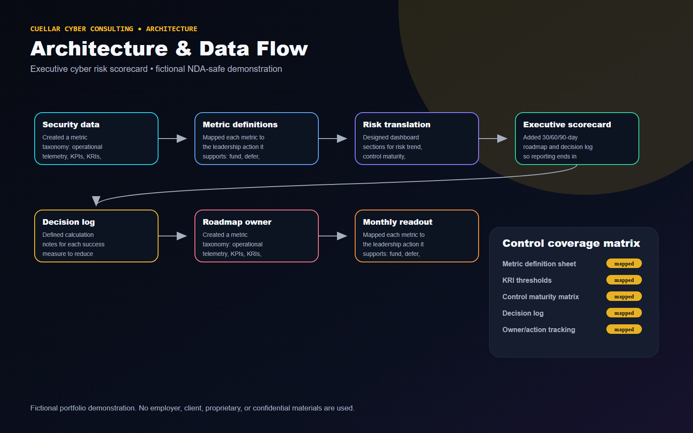
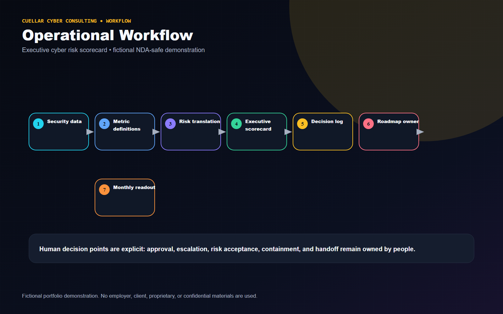
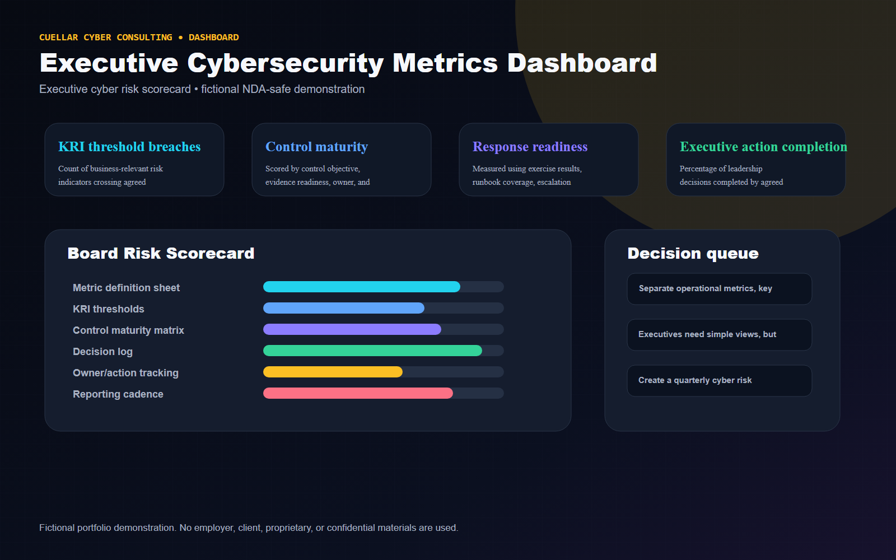

Executive Summary
Modeled an executive dashboard and reporting cadence that links technical security data to business risk, action ownership, and 30/60/90-day roadmap decisions.
Fictional Client Profile
Summit Retail Group, a fictional enterprise with multiple business units and distributed security ownership.
Client Challenge and Business Risk
Client situation
A fictional enterprise needed cybersecurity reporting that moved beyond vanity metrics and showed risk trend, control maturity, response readiness, investment priorities, and decisions required.
Business risk
Leadership can underfund, overreact, or misprioritize security work when dashboards show raw alert counts, vulnerability totals, or maturity scores without business context and action ownership.
Project objectives
- Separate operational metrics, key performance indicators, key risk indicators, and executive decision metrics.
- Show exposure trends, control maturity, detection effectiveness, response readiness, remediation accountability, and investment priorities.
- Create a board-ready scorecard with clear metric definitions and recommended actions.
- Avoid unsupported financial-loss claims while demonstrating business-risk translation.
Constraints and assumptions
- All metrics are fictional demonstration data, example targets, or proposed success measures.
- No real revenue, client, incident, loss, or employer-specific performance data is used.
- Dashboard is a reporting model, not a substitute for formal risk quantification.
Technical Approach
- Created a metric taxonomy: operational telemetry, KPIs, KRIs, and executive decision metrics.
- Mapped each metric to the leadership action it supports: fund, defer, accept risk, remediate, validate, or investigate.
- Designed dashboard sections for risk trend, control maturity, detection effectiveness, response readiness, remediation accountability, and investment priorities.
- Added 30/60/90-day roadmap and decision log so reporting ends in action rather than passive observation.
- Defined calculation notes for each success measure to reduce ambiguity and metric gaming.
Architecture Diagram

Operational Workflow

Security Controls
- Metric definition sheet
- KRI thresholds
- Control maturity matrix
- Decision log
- Owner/action tracking
- Reporting cadence
- Board narrative template
Technologies and Frameworks
Deliverables
- Executive dashboard mockup
- Board scorecard
- Risk trend chart
- Control maturity matrix
- Investment-priority matrix
- Detection effectiveness scorecard
- Response-readiness summary
- 30/60/90-day roadmap
- Key risk indicator definitions

Business Outcomes and Success Measures
Metrics are labeled as illustrative example targets or proposed success measures. They are not real accomplishments.
| Measure | How it would be interpreted |
|---|---|
| KRI threshold breaches | Count of business-relevant risk indicators crossing agreed thresholds. |
| Control maturity | Scored by control objective, evidence readiness, owner, and remediation status. |
| Response readiness | Measured using exercise results, runbook coverage, escalation clarity, and open readiness gaps. |
| Executive action completion | Percentage of leadership decisions completed by agreed owner and date. |
Tradeoffs and Design Decisions
- Executives need simple views, but oversimplification hides uncertainty; the dashboard includes definitions and confidence notes.
- Financial exposure models can be useful, but this fictional portfolio avoids unsupported dollar claims.
- Too many metrics dilute accountability; the scorecard emphasizes decisions required.
Lessons Learned
- A dashboard becomes executive-ready when every metric answers: what changed, why it matters, who owns it, and what decision is needed.
- Security reporting should reduce ambiguity, not generate more meetings.
Potential Next Phase
Create a quarterly cyber risk briefing package with board narrative, appendix metric definitions, and implementation roadmap.
Fictional and NDA-Safe Disclaimer
Fictional portfolio demonstration. No employer, client, proprietary, or confidential materials are used. The content does not include or imitate employer dashboards, logos, terminology, real data, real incident details, internal detections, internal code, or confidential workflows.